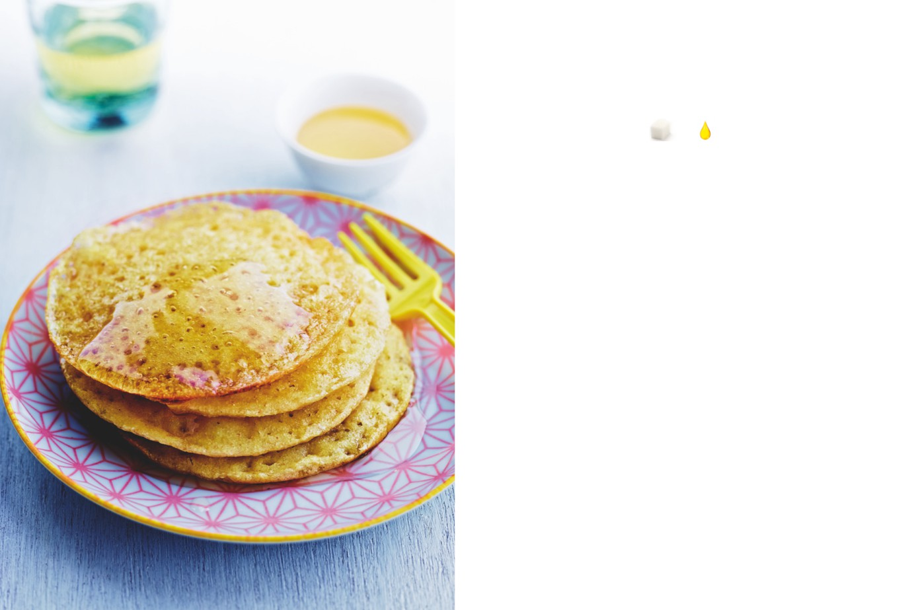

Crêpes à mille trous
(baghrir)
APPORTS NUTRITIONNELS PAR PERSONNE
5
0
carrés
carré
de sucre
de graisse
PRÉPARATION : 20 minutes / REPOS : 30 minutes / CUISSON : 2 à 3 minutes par crêpe
Ingrédients pour 6 à 8 personnes
1.
Disposez la semoule en fontaine dans une terrine. Cassez-y
les œufs, ajoutez le sel, la levure chimique et la levure de boulanger
500 g de semoule de blé très fine
émiettée. Commencez à travailler la pâte au fouet en ajoutant
2 œufs
de l’eau tiède au fur et à mesure jusqu’à obtention d’une pâte
2 pincées de sel
un peu liquide.
2 sachets de levure chimique
1 cube de levure de boulanger
(ou 1 sachet de levure de boulanger
2.
Versez cette préparation dans le bol d’un robot et mixez
déshydratée)
jusqu’à obtention d’une crème jaune pâle lisse et homogène
(environ 2 minutes). Versez-la dans un saladier, couvrez celui-ci
de film étirable et laissez reposer 30 minutes dans un endroit tiède.
3.
Faites chauffer une poêle à revêtement antiadhérent, sans
matière grasse, et déposez-y une petite louche de pâte. Laissez-la
s’étaler : une multitude de petits trous doit apparaître sur toute
la surface de la crêpe. Quand la surface est juste sèche, soulevez
la crêpe avec une spatule en bois et déposez-la sur un plat chauffé.
Recouvrez d’un linge. Procédez de même avec le reste de pâte.
4.
Servez tiède ou réchauffé, avec un peu de miel liquide
ou avec la salade d’oranges marocaine de la page 16.
L’ASTUCE DE CHEF
Les baghrir, également appelés « crêpes nid-d’abeille »,
sont un classique du Maghreb. La pâte est meilleure
quand elle a fermenté au moins 6 heures au réfrigérateur :
n’hésitez pas à la préparer à l’avance.
Pour une glycémie et un jean adaptés, ne mangez que 1 à
2 crêpes par personne, ou alors allez bouger.
39
Classiques revisités